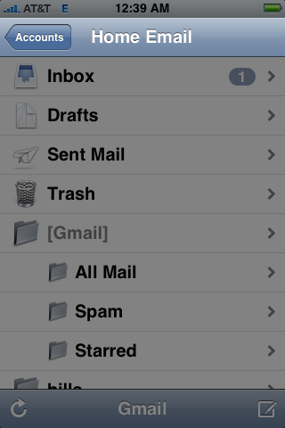
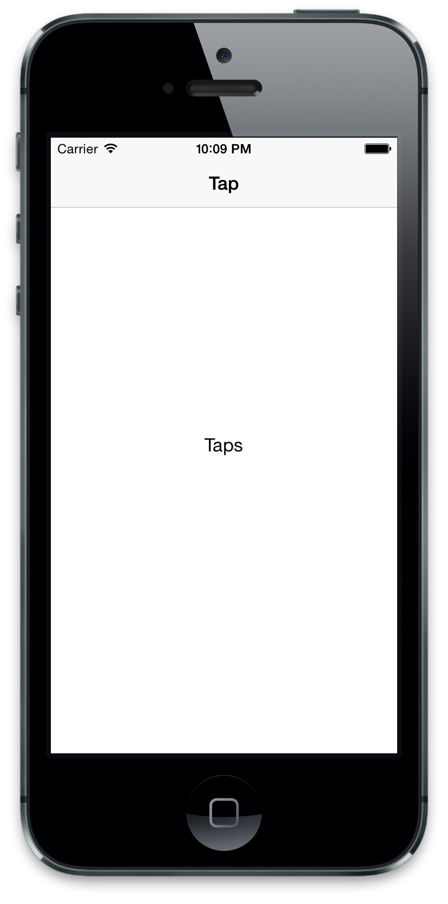
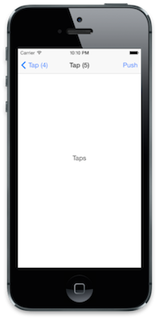
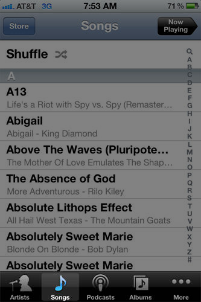
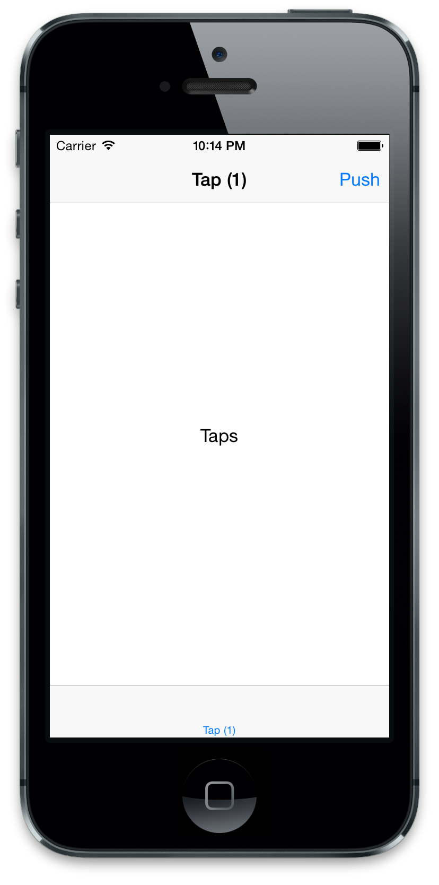
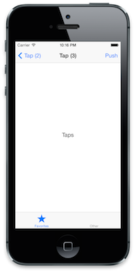

Containers
Now that we have a big white screen on our hands, let's dress it up.
If you've used more than a handful of iOS apps, you've undoubtedly noticed some visual similarities. Primarily, many apps a black bottom bar with tabs and a blue top bar with a title. These are the standard "containers" in iOS, known as UITabBarController and UINavigationController respectively. We're going to play with them.
These containers are UIViewController subclasses which actually manage other UIViewControllers. Kind of wild, right? They have a view just like regular controllers, to which these "children" controllers' views are added as subviews. Thankfully, we never really have to worry about how that works, as these container controllers have pleasant APIs that deal with controllers, not views.
UINavigationController
Let's start with the most common container, UINavigationController. It manages its children controllers as a stack, pushing and popping them along a visually horizontal path. Mail.app uses one for its flow from Accounts -> An Account -> Inbox -> Message. The navigation controller is really nice in that automatically it'll handle the back button for you; all you need to do is push and pop controllers.

In AppDelegate, change our rootViewController assignment to use a UINavigationController:
...
controller = TapController.alloc.initWithNibName(nil, bundle: nil)
@window.rootViewController = UINavigationController.alloc.initWithRootViewController(controller)
...
initWithRootViewController will take the controller passed to it and start the stack with it.
And make one more change before we run the app, in TapController:
...
self.view.addSubview @label
self.title = "Tap"
...
rake and check out our slightly prettier app:

Sweet. Now let's make it do something. We're going to add a navigation bar button that pushes more instances of TapControllers onto the navigation controller stack.
You can actually put buttons in the navigation bar at the top of the screen. For example, Mail.app does this for the "Edit" button. These buttons are instances of UIBarButtonItem, which has loads of configuration options (want to use text? an image? a system icon? all sorts of fun stuff).
In TapsController, add the button in viewDidLoad:
def viewDidLoad
...
self.title = "Tap"
rightButton = UIBarButtonItem.alloc.initWithTitle("Push", style: UIBarButtonItemStyleBordered, target:self, action:'push')
self.navigationItem.rightBarButtonItem = rightButton
end
Should be pretty plain what this does. We create a UIBarButtonItem instance with a title and a style. The style property determines how our button looks (either plain, bordered, or "done"; play around to see the differences). We then set it as our controller's navigationItem's rightBarButtonItem. Every UIViewController has a navigationItem, which is how we access the information displayed in the blue bar at the top. (NOTE that UINavigationItem isn't a UIView! so you can't arbitrarily add subviews to it).
What's the target/action business? Well, this is where the original Objective-C SDK leaks into Ruby-land =(. Up until very recently, you couldn't pass anonymous functions as callbacks in Objecive-C; as an alternative, APIs would pass objects and the name of a function to call on that object. We do this operation in Ruby with blocks and lambdas, but sadly the older iOS APIs show their age.
Anyway, target is the object you want to call the action function on. Let's implement it in our TapController so you get a better idea:
...
def push
new_controller = TapController.alloc.initWithNibName(nil, bundle: nil)
self.navigationController.pushViewController(new_controller, animated: true)
end
...
Make more sense now? When the user taps the bar button, push gets called on the target, which in this case is our controller.
In addition to navigationItem, UIViewControllers also have a propery for their navigationController, if available. On the nav controller we call pushViewController which pushes the passed controller onto the stack. By default, the navigation controller will also show a back button which handles popping the current controller for us (normally we call popViewControllerAnimated: on the navigation controller). Kind of neat, right?
Let's have one last bit of fun before we run the app. Have the controller's title reflect its position in the navigation stack, like so:
def viewDidLoad
...
self.title = "Tap (#{self.navigationController.viewControllers.count})"
...
end
Now rake and observe our dynamic controllers!

Now, I said we'd cover UITabControllers too, so let's get to it.
UITabBarController

Tab controllers are a lot like UINavigationController and other container controllers: it has a list of viewControllers which are presented within the container's "chrome" (the black bar). However, unlike the other containers, UITabBarControllers are only supposed act as the rootViewController of the window (i.e. you shouldn't push a tab bar controller inside a navigation controller).
In AppDelegate, let's make a small change:
...
controller = TapController.alloc.initWithNibName(nil, bundle: nil)
nav_controller = UINavigationController.alloc.initWithRootViewController(controller)
tab_controller = UITabBarController.alloc.initWithNibName(nil, bundle: nil)
tab_controller.viewControllers = [nav_controller]
@window.rootViewController = tab_controller
...
Unlike other code examples, this doesn't have anything new! We create the UITabBarController like a normal UIViewController and set its viewControllers to an array with our navigation controller.
rake and check it out!

Kind of...underwhelming, I guess. Let's start to pretty it up by adding an icon to our tab bar.
Much like navigationItem, every UIViewController has a tabBarItem property, which accepts an instance of UITabBarItem. We can use this object to customize the icon, title, and other appearance options of our controller's tab.
Override initWithNibName:bundle: in TapController, and go ahead and create such an object:
...
def initWithNibName(name, bundle: bundle)
super
self.tabBarItem = UITabBarItem.alloc.initWithTabBarSystemItem(UITabBarSystemItemFavorites, tag: 1)
self
end
...
This is one initializer for UITabBarItem; you can also use initWithTitle:image:tag: if you want to supply a custom image and title. If you do use a custom image, it needs to be a 30x30 black and transparent icon.
initWithTabBarSystemItem: makes our lives a little easier for demonstrating a tab icon, but it will force the title to correspond to the system's image (in this case, "Favorites").
Why do we put it in initWithNibName:bundle:? Because we want it to create the tabBarItem as soon as the controller exists, regardless of whether or not its view exists. If you put it in viewDidLoad, then it might not get created when the app launches (tab bar controllers only load each child controller when its first accessed by the user).
One more thing! Let's make another tab. We don't really have anything to do in this other tab yet, so let's just make an empty UIViewController with a different background color in AppDelegate:
...
other_controller = UIViewController.alloc.initWithNibName(nil, bundle: nil)
other_controller.title = "Other"
other_controller.view.backgroundColor = UIColor.purpleColor
tab_controller = UITabBarController.alloc.initWithNibName(nil, bundle: nil)
tab_controller.viewControllers = [nav_controller, other_controller]
@window.rootViewController = tab_controller
...
rake and voila! A whole bunch of container controllers! They don't do a whole lot, but you can easily see how these few classes form the building blocks of 80% of iOS apps.

Subway Up
Let's rundown what we covered:
- The iOS SDK uses
UINavigationControllers andUITabBarControllers for containing "child" view controllers. UINavigationControlleruses 'pushViewController:animated:' and 'popViewControllerAnimated:' to control the stack.- Use
controller.navigationItemto change the buttons and other options of the top blue bar for a controller. UITabBarControllerusesviewControllers=to control its children; note thatUITabBarControllershould only be used as therootViewControllerof a window.- Use
controller.tabBarItemto change the tab icon and title displayed for that controller.
Simply walk to Mordor/the next chapter to learn about Tables!